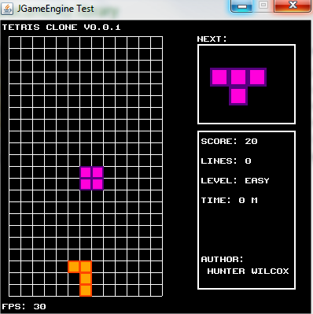

Hunter Wilcox
Since about July of 2019, I’ve been making a 2D game engine entirely in the Java Programming language and it’s native libraries. You may think why I would use Java of all languages. I chose Java mainly because of it’s simplicity. This game engine is also not meant for “top of the line” 2D game making. It was mainly designed for simple 8 or 16 bit graphics. This whole project was mainly for fun and to teach myself a little more about game programming. If you would like to see the source, it’s linked here.
Welcome to judgeglass.net! This is were I will be posting images, information, and interesting things about mostly computers. I hope you find this website somewhat useful and come again!